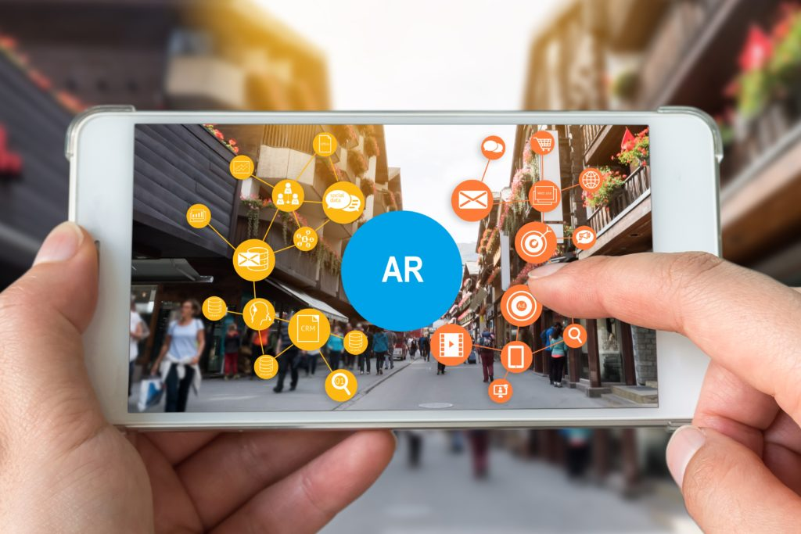

Introduction
Augmented Reality (AR) seamlessly integrates digital information into the real world, enhancing the user's perception and interaction with their environment. Through devices like smartphones, tablets, or AR glasses, virtual content such as images, videos, or 3D models is overlaid onto the user's view of the physical world in real-time. AR applications span diverse fields including gaming, education, retail, healthcare, and architecture, offering immersive experiences and practical functionalities. Marker-based and markerless AR systems employ computer vision and sensor technologies to detect and track objects and surfaces, enabling accurate placement of virtual content. Despite challenges like ensuring precise tracking and minimizing latency, AR continues to evolve, promising transformative experiences and redefining how we engage with information and the world around us.
Applications in Education:
- Interactive Textbooks: AR brings static images and diagrams to life, enhancing students' understanding and engagement.
- Skills Training: Utilizes AR for practical simulations in fields like medicine and engineering.


Benefits:
Augmented Reality (AR) offers numerous benefits across various sectors, enhancing education, retail, healthcare, and beyond. Its interactive and immersive nature improves learning experiences, increases retail sales through virtual try-ons, enhances medical training and patient care, and streamlines field service tasks. Additionally, AR enhances entertainment, tourism, and marketing efforts, providing engaging experiences that captivate audiences and foster brand loyalty. Overall, AR's seamless integration of digital content into the real world presents practical solutions and enriching experiences in a wide range of industries.
Technological and Pedagogical Challenges:
Technological challenges in augmented reality include ensuring precise tracking and minimizing latency for seamless user experiences. Pedagogical challenges involve designing AR content that effectively aligns with educational objectives and enhances learning outcomes. Balancing these technical and pedagogical considerations is crucial for the successful integration of AR in educational settings.

Inspirational Quote:
"Technology will never replace great teachers, but technology in the hands of great teachers is transformational." — George Couros
Conclusion:
AR in education promises to bridge gaps between theoretical knowledge and practical application, making learning a dynamic and interactive process.